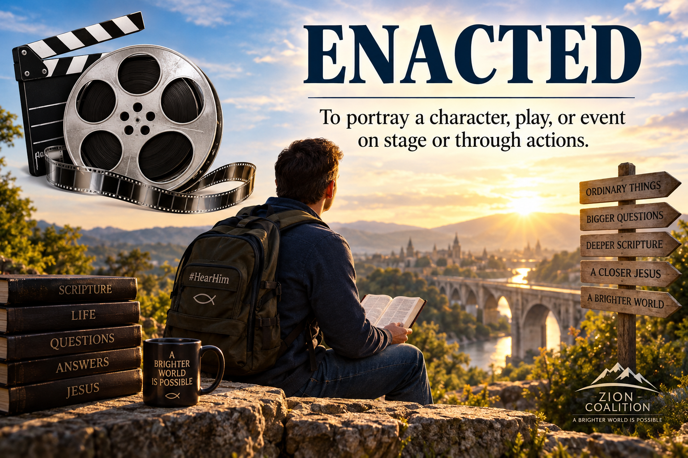

God Is Turning My Life Into Scripture Study
I am beginning to notice something.
God isn't merely getting me to study scripture more.
He seems to be turning my life into scripture study.
Those aren't quite the same thing.
For most of my life, scripture study meant an activity. You open the scriptures. You read. You underline something. You ponder. Maybe you pray. Eventually you close the book and go do something else.
Scripture study has a beginning and an ending.
But something different seems to be happening to me.
More and more, ordinary life itself becomes the material through which I encounter scripture—and scripture becomes the material through which I interpret ordinary life.
A pillow isn't necessarily just a pillow anymore.
It raises questions about rest, surrender, trust, waking, sleeping, death, resurrection—and Jesus.
So it becomes my Jesus Pillow.
A shower isn't merely getting clean.
Water starts reminding me of Jesus. Cleansing. Baptism. Living water. Being born again. Starting over.
So an ordinary shower gets born again as my Jesus Shower.
The same thing happens with music.
For years I have been taking classic-rock songs and redeeming them—keeping the melody, energy, memories, and emotional architecture while pointing the song toward Jesus.
I call those songs born again.
And now I am realizing that perhaps the songs weren't an isolated project.
A song can be born again.
A pillow can be born again.
A shower can be born again.
A nap can be born again.
A room can be born again.
Maybe even the seemingly ridiculous things that happen during an ordinary day can become parables.
Pizza can teach me something about sin and the need for a Savior.
A doorway can make me think about a veil.
Going to sleep can make me think about death.
Waking up can make me think about resurrection.
Leaving one way of thinking and entering another can suddenly look like Exodus.
And Exodus itself stops being merely something I read about Moses doing thousands of years ago.
I start asking:
What am I being called out of?
What wilderness am I walking through?
What am I still carrying out of Egypt that Jesus is trying to get out of me?
Now I am studying Exodus while simultaneously having exoduses.
That is different.
It means scripture study is escaping from the chair.
It is getting into the bedroom, the shower, the kitchen, the car, the music, my relationships, my mistakes, my imagination—and even the strange little things I normally wouldn't consider remotely religious.
My life becomes a kind of laboratory.
Something happens.
I notice it.
I ask what it might mean.
I compare it with scripture.
Scripture changes how I understand the experience.
The experience sends me back into scripture with a question I didn't have before.
And then both send me back toward Jesus.
Around and around it goes.
Maybe that helps me understand what I am doing with my Jesus-Greg Version (JGV) of the Bible too.
I don't have to conclude that every thought that pops into my head is scripture.
I don't have to assume every interpretation I make is correct.
In fact, the opposite principle seems important:
I can experiment.
I can listen.
I can revise.
I can discover that I misunderstood something.
I can #HearHim—and simultaneously remain aware that #HearHim is not #HearGreg.
That makes the whole thing less like me announcing scripture and more like me living inside scripture study.
And perhaps that is what I have been building without fully realizing it with My Jesus-Greg WORLD.
I thought I was putting reminders of Jesus everywhere.
And I was.
But maybe something larger has been happening.
The reminders create questions.
The questions create scripture study.
The scripture study changes the meaning of the objects.
The changed objects remind me of Jesus again.
The whole environment begins functioning like a giant, ongoing scripture-study apparatus.
The world becomes the classroom.
My life becomes the workbook.
Scripture becomes the interpretive language.
And Jesus remains the subject.
Which means I can now describe something that has been happening to me for years in one sentence:
I used to study the scriptures.
Then I began seeing my life through the scriptures.
Now, increasingly, my life itself seems to be becoming scripture study.
And there is a paradox in that which I really like: